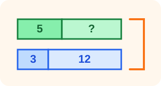
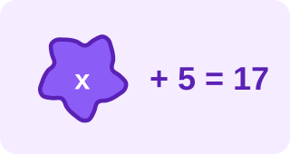

Collection
Splat et schémas en barres
Les miniatures apparaissent ici, au moment où elles aident réellement à choisir l’outil.
Manipuler et représenter
Pour projeter, masquer une quantité et faire raisonner sur l’inconnue.

Splat
Le Splat classique pour cacher une quantité et travailler les décompositions.

Splat et barres
Associer la quantité masquée à une représentation en barres.

Splat et équations
Passer progressivement de la représentation à l’écriture d’une équation.
ÉquaSplat
Construire et résoudre des égalités à partir de quantités masquées.
ÉquaBarre
Mettre en relation schémas en barres et écritures algébriques.
Créer des supports et des problèmes
Des outils destinés à l’enseignant pour préparer, personnaliser ou imprimer.